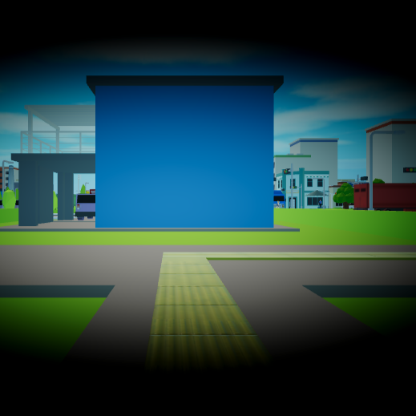
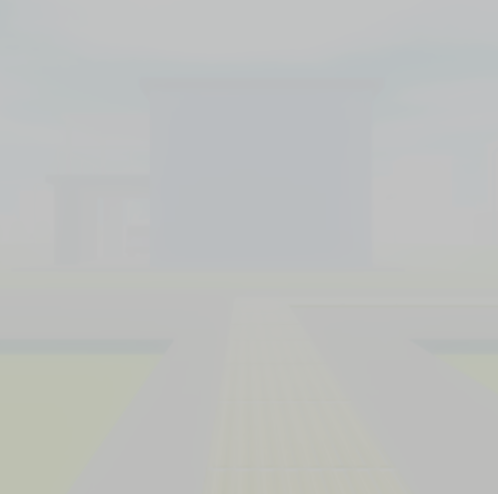
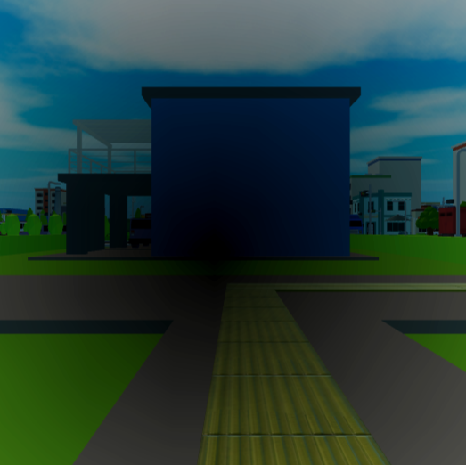
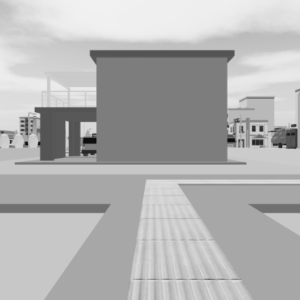

BLIND WALKER
SEE THROUGH THE SOUND
INITIALIZE PULSE
// SYSTEM MECHANICS
감각의 재구성
01 / VISUALS
완벽한 어둠
시각 정보가 배제된 무(無)의 공간. 소리와 진동이 반사되어 돌아올 때만 3D 공간의 윤곽이 네온 와이어프레임 형태로 일시적 실체화됩니다.
02 / AUDIO
음향 탐지 (Echolocation)
발자국 소리, 지팡이의 타격음, 숨소리. 사용자가 발생시키는 모든 파동은 벽과 장애물에 반사되어 지형을 그리는 유일한 도구가 됩니다.
03 / THREAT
소리의 리스크
시야를 확보하기 위해 소리를 낼수록, 어둠 속에 숨어있는 정체불명의 존재 역시 당신의 위치를 정확하게 추적하기 시작합니다.
// IN-GAME EXPERIENCE
실제 플레이 화면
타일 생성

플레이어의 발걸음이 만들어내는 세상
동적 환경

소리의 파동으로 시시각각 변화하는 지형
// ACCESSIBILITY FEATURES
다양한 시야 모드 체험




